Sử dụng navigation mesh
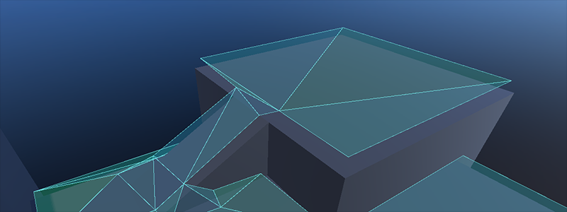
Phiên bản 2D và 3D của navigation mesh lần lượt là NavigationPolygon và NavigationMesh.
Ghi chú
Navigation mesh chỉ mô tả khu vực có thể đi qua đối với vị trí tâm của agent. Mọi giá trị bán kính mà agent có đều bị bỏ qua. Nếu muốn việc tìm đường tính đến kích thước (va chạm) của agent, bạn cần thu nhỏ navigation mesh cho phù hợp.
Navigation hoạt động độc lập với các phần khác của engine như kết xuất hay vật lý. Navigation mesh là thứ duy nhất được xét khi tìm đường; ví dụ, hình ảnh hiển thị và collision shape bị hệ thống navigation bỏ qua hoàn toàn. Nếu bạn cần tính đến dữ liệu khác (chẳng hạn hình ảnh hiển thị) khi tìm đường, bạn cần điều chỉnh navigation mesh cho phù hợp. Quá trình đưa các ràng buộc navigation vào navigation mesh thường được gọi là bake navigation mesh.
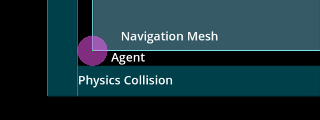
Navigation mesh mô tả một bề mặt mà tâm của agent có thể đứng an toàn, khác với các shape vật lý mô tả giới hạn va chạm bên ngoài.
Nếu bạn gặp vấn đề xuyên vật thể hoặc va chạm khi đi theo đường đi navigation, hãy luôn nhớ rằng bạn cần cho hệ thống navigation biết ý định của mình thông qua một navigation mesh phù hợp. Tự bản thân hệ thống navigation sẽ không bao giờ biết "đây là collision shape hay mesh hiển thị của cái cây / tảng đá / bức tường", vì nó chỉ biết rằng "ở đây tôi được báo là có thể đi an toàn vì nó nằm trên navigation mesh".
Việc bake navigation mesh có thể được thực hiện bằng NavigationRegion2D hoặc NavigationRegion3D, hoặc bằng cách dùng trực tiếp API NavigationServer2D và NavigationServer3D.
Bake navigation mesh bằng NavigationRegion
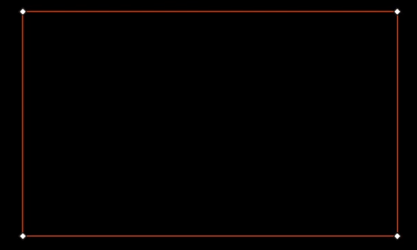
Bake navigation mesh với khoảng lùi bán kính agent so với hình học.
Node NavigationRegion giúp việc bake navigation mesh trở nên dễ tiếp cận hơn. Khi bake bằng node NavigationRegion, các bước phân tích, bake và cập nhật region riêng lẻ đều được gộp vào một hàm.
Các node này có trong 2D và 3D lần lượt là NavigationRegion2D và NavigationRegion3D.
Mẹo
source_geometry_mode của navigation mesh có thể được chuyển sang phân tích theo tên nhóm node cụ thể, nhờ đó các node cần bake có thể được đặt ở bất cứ đâu trong scene.
Khi chọn một node NavigationRegion2D trong Editor, các tùy chọn bake cùng các công cụ vẽ đa giác sẽ xuất hiện trên thanh trên cùng của Editor.
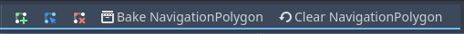
Để region hoạt động, bạn cần thêm một resource NavigationPolygon.
Các thuộc tính để parse và bake navigation mesh khi đó thuộc về resource được dùng và có thể tìm thấy trong Inspector của resource.
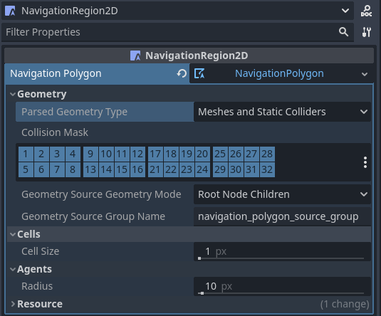
Kết quả phân tích hình học nguồn có thể được điều chỉnh bằng các thuộc tính sau.
parsed_geometry_typelọc xem đối tượng hiển thị, đối tượng vật lý hay cả hai sẽ được parse từ SceneTree. Để biết chi tiết về những đối tượng nào được parse và parse như thế nào, xem phần về parse hình học nguồn bên dưới.collision_masklọc những đối tượng va chạm vật lý nào được đưa vào khiparsed_geometry_typebao gồm static collider.source_geometry_modexác định bắt đầu parse từ (các) node nào và cách duyệt SceneTree.source_geometry_group_nameđược dùng khi chỉ một nhóm node nhất định cần được parse. Phụ thuộc vàosource_geometry_modeđã chọn.
Sau khi đã thêm hình học nguồn, kết quả bake có thể được kiểm soát bằng các thuộc tính sau.
cell_sizeđặt kích thước lưới raster hóa và nên khớp với kích thước của navigation map.agent_radiusthu nhỏ navigation mesh được bake để có đủ khoảng cách lề cho kích thước (va chạm) của agent.
Việc bake của NavigationRegion2D cũng có thể được dùng lúc runtime bằng script.
var on_thread: bool = true
bake_navigation_polygon(on_thread)
bool onThread = true;
BakeNavigationPolygon(onThread);
Để thử nhanh việc bake 2D với cài đặt mặc định:
Thêm một NavigationRegion2D.
Thêm một resource NavigationPolygon vào NavigationRegion2D.
Thêm một Polygon2D bên dưới NavigationRegion2D.
Vẽ 1 đường viền NavigationPolygon bằng công cụ vẽ của NavigationRegion2D đang được chọn.
Vẽ 1 đường viền Polygon2D bên trong đường viền NavigationPolygon bằng công cụ vẽ của Polygon2D đang được chọn.
Nhấn nút bake trong trình chỉnh sửa và một navigation mesh sẽ xuất hiện.
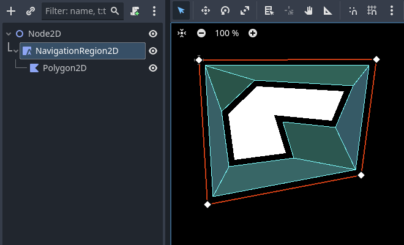
Khi một node NavigationRegion3D được chọn trong trình chỉnh sửa, các tùy chọn bake sẽ xuất hiện trên thanh trên cùng của trình chỉnh sửa.
Để region hoạt động, bạn cần thêm một resource NavigationMesh.
Các thuộc tính để parse và bake navigation mesh khi đó thuộc về resource được dùng và có thể tìm thấy trong Inspector của resource.
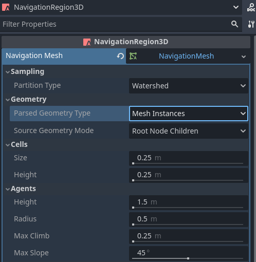
Kết quả phân tích hình học nguồn có thể được điều chỉnh bằng các thuộc tính sau.
parsed_geometry_typelọc xem đối tượng hiển thị, đối tượng vật lý hay cả hai sẽ được parse từ SceneTree. Để biết chi tiết về những đối tượng nào được parse và parse như thế nào, xem phần về parse hình học nguồn bên dưới.collision_masklọc những đối tượng va chạm vật lý nào được đưa vào khiparsed_geometry_typebao gồm static collider.source_geometry_modexác định bắt đầu parse từ (các) node nào và cách duyệt SceneTree.source_geometry_group_nameđược dùng khi chỉ một nhóm node nhất định cần được parse. Phụ thuộc vàosource_geometry_modeđã chọn.
Sau khi đã thêm hình học nguồn, kết quả bake có thể được kiểm soát bằng các thuộc tính sau.
cell_sizevàcell_heightđặt kích thước lưới voxel raster hóa và nên khớp với kích thước của navigation map.agent_radiusthu nhỏ navigation mesh được bake để có đủ khoảng cách lề cho kích thước (va chạm) của agent.agent_heightloại khỏi navigation mesh những vùng mà agent quá cao để lọt vào.agent_max_climbvàagent_max_slopeloại bỏ những vùng mà chênh lệch độ cao giữa các voxel lân cận quá lớn, hoặc bề mặt quá dốc.
Cảnh báo
cell_size hoặc cell_height quá nhỏ có thể tạo ra quá nhiều voxel, có khả năng làm game bị treo hoặc thậm chí crash.
Việc bake của NavigationRegion3D cũng có thể được dùng lúc runtime bằng script.
var on_thread: bool = true
bake_navigation_mesh(on_thread)
bool onThread = true;
BakeNavigationMesh(onThread);
Để thử nhanh việc bake 3D với cài đặt mặc định:
Thêm một NavigationRegion3D.
Thêm một resource NavigationMesh vào NavigationRegion3D.
Thêm một MeshInstance3D bên dưới NavigationRegion3D.
Thêm một PlaneMesh vào MeshInstance3D.
Nhấn nút bake trong trình chỉnh sửa và một navigation mesh sẽ xuất hiện.
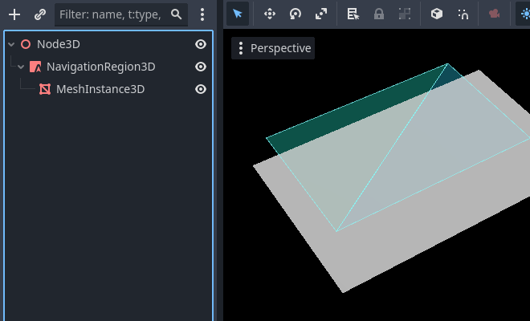
Bake navigation mesh bằng NavigationServer
NavigationServer2D và NavigationServer3D có các hàm API để gọi riêng từng bước của quá trình bake navigation mesh.
parse_source_geometry_data()có thể được dùng để parse hình học nguồn thành một resource có thể tái sử dụng và serialize được.bake_from_source_geometry_data()có thể được dùng để bake navigation mesh từ dữ liệu đã được parse, ví dụ để tránh các vấn đề hiệu năng lúc runtime do việc parse (dư thừa).bake_from_source_geometry_data_async()cũng tương tự nhưng bake navigation mesh theo kiểu trì hoãn bằng các luồng, không chặn luồng chính.
So với NavigationRegion, NavigationServer cho phép kiểm soát quá trình bake navigation mesh chi tiết hơn. Đổi lại, nó phức tạp hơn khi sử dụng nhưng cũng cung cấp nhiều tùy chọn nâng cao hơn.
Một số ưu điểm khác của NavigationServer so với NavigationRegion là:
Server có thể parse hình học nguồn mà không bake, ví dụ để lưu cache cho lần dùng sau.
Server cho phép chọn thủ công node gốc để bắt đầu parse hình học nguồn.
Server có thể nhận và bake từ dữ liệu hình học nguồn được tạo theo thủ tục (procedural).
Server có thể bake nhiều navigation mesh lần lượt trong khi (tái) sử dụng cùng một dữ liệu hình học nguồn.
Để bake navigation mesh bằng NavigationServer, bạn cần có hình học nguồn. Hình học nguồn (source geometry) là dữ liệu hình học cần được xét đến trong quá trình bake navigation mesh. Cả navigation mesh 2D và 3D đều được tạo bằng cách bake từ hình học nguồn.
Phiên bản 2D và 3D của resource hình học nguồn lần lượt là NavigationMeshSourceGeometryData2D và NavigationMeshSourceGeometryData3D.
Hình học nguồn có thể là hình học được parse từ mesh hiển thị, từ va chạm vật lý, hoặc các mảng dữ liệu được tạo theo thủ tục, như đường viền (2D) và mặt tam giác (3D). Để tiện lợi, hình học nguồn thường được parse trực tiếp từ các cấu trúc node trong SceneTree. Với việc (re)bake navigation mesh lúc runtime, hãy lưu ý rằng việc parse hình học luôn diễn ra trên luồng chính.
Ghi chú
SceneTree không an toàn luồng (thread-safe). Việc parse hình học nguồn từ SceneTree chỉ có thể được thực hiện trên luồng chính.
Cảnh báo
Dữ liệu từ mesh hiển thị và đa giác cần được nhận về từ GPU, khiến RenderingServer bị đình trệ trong quá trình đó. Với việc (re)bake lúc runtime, nên ưu tiên dùng physics shape làm hình học nguồn để parse.
Hình học nguồn được lưu trong resource để hình học đã tạo có thể được tái sử dụng cho nhiều lần bake. Ví dụ: bake nhiều navigation mesh cho các kích thước agent khác nhau từ cùng một hình học nguồn. Điều này cũng cho phép lưu hình học nguồn xuống đĩa để tải lại sau, ví dụ để tránh chi phí parse lại lúc runtime.
Nhìn chung, dữ liệu hình học nên được giữ thật đơn giản. Càng ít cạnh càng tốt, miễn là đủ dùng. Đặc biệt trong 2D, nên tránh hình học trùng lặp và lồng nhau vì nó buộc phải tính toán lỗ đa giác, có thể dẫn đến đa giác bị lật. Một ví dụ về hình học lồng nhau là một shape StaticBody2D nhỏ hơn được đặt hoàn toàn bên trong biên của một shape StaticBody2D khác.
Bake các chunk navigation mesh cho thế giới lớn
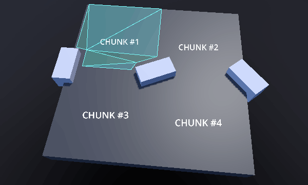
Xây dựng và cập nhật từng chunk navigation mesh riêng lẻ lúc runtime.
Xem thêm
Bạn có thể xem cách bake chunk navigation mesh hoạt động thực tế trong các dự án demo Navigation Mesh Chunks 2D và Navigation Mesh Chunks 3D.
Để tránh các cạnh bị lệch giữa các chunk region khác nhau, navigation mesh có hai thuộc tính quan trọng cho quá trình bake: baking bound (giới hạn bake) và border size (kích thước viền). Kết hợp lại, chúng có thể đảm bảo các cạnh giữa các chunk region được căn khớp hoàn hảo.
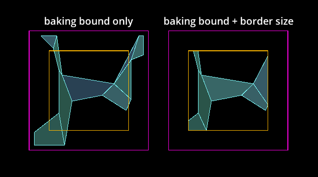
Chunk navigation mesh được bake với bake bound hoặc được bake với border size bổ sung.
Baking bound, là một Rect2 căn theo trục cho 2D và AABB cho 3D, giới hạn hình học nguồn được dùng bằng cách loại bỏ mọi hình học nằm ngoài giới hạn.
Các thuộc tính baking_rect và baking_rect_offset của NavigationPolygon có thể được dùng để tạo và đặt baking bound 2D.
Các thuộc tính filter_baking_aabb và filter_baking_aabb_offset của NavigationMesh có thể được dùng để tạo và đặt baking bound 3D.
Nếu chỉ đặt baking bound thì vẫn còn một vấn đề khác. Navigation mesh kết quả chắc chắn sẽ bị ảnh hưởng bởi các offset cần thiết như agent_radius, khiến các cạnh không căn khớp đúng.
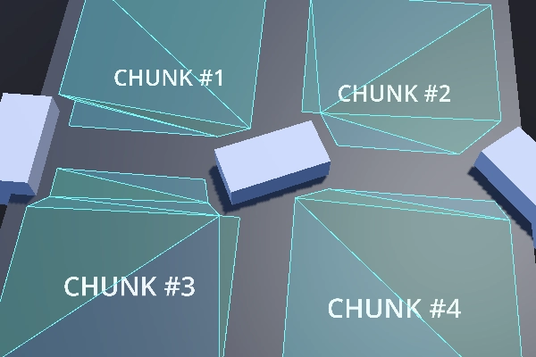
Các chunk navigation mesh có khoảng hở dễ thấy do offset bán kính agent đã được bake.
Đây là lúc thuộc tính border_size của navigation mesh phát huy tác dụng. Border size là một lề hướng vào trong tính từ baking bound. Đặc điểm quan trọng của border size là nó không bị ảnh hưởng bởi hầu hết các offset và hậu xử lý như agent_radius.
Thay vì loại bỏ hình học nguồn, border size loại bỏ các phần của bề mặt cuối cùng của navigation mesh đã bake. Nếu baking bound đủ lớn, border size có thể loại bỏ các phần bề mặt gây vấn đề để chỉ còn lại đúng kích thước chunk mong muốn.
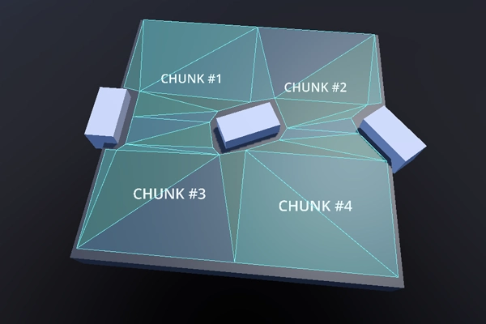
Các chunk navigation mesh với các cạnh được căn khớp và không có khoảng hở.
Ghi chú
Baking bound cần đủ lớn để bao gồm một lượng hình học nguồn hợp lý từ tất cả các chunk lân cận.
Cảnh báo
Trong 3D, chức năng của border size chỉ giới hạn trên trục xz.
Các vấn đề thường gặp khi bake navigation mesh
Có một số vấn đề thường gặp và lưu ý quan trọng cần xem xét khi tạo hoặc bake navigation mesh.
- Bake navigation mesh gây vấn đề về tốc độ khung hình khi đang chạy
Theo mặc định, việc bake navigation mesh được thực hiện trên một luồng nền, nên miễn là nền tảng hỗ trợ đa luồng, bản thân việc bake hiếm khi là nguồn gốc của các vấn đề hiệu năng (giả sử hình học có kích thước và độ phức tạp hợp lý cho việc rebake lúc runtime).
Nguồn gây vấn đề hiệu năng phổ biến lúc runtime là bước parse hình học nguồn liên quan đến node và SceneTree. SceneTree không an toàn luồng nên mọi node đều phải được parse trên luồng chính. Một số node chứa nhiều dữ liệu có thể rất nặng và chậm khi parse lúc runtime, ví dụ TileMap có một hoặc nhiều đa giác cho mỗi ô được dùng và mỗi TileMapLayer cần parse. Các node chứa mesh cần yêu cầu dữ liệu từ RenderingServer, làm đình trệ việc kết xuất trong quá trình đó.
Để cải thiện hiệu năng, hãy dùng các shape được tối ưu hơn, ví dụ collision shape thay vì mesh hiển thị chi tiết, đồng thời gộp và đơn giản hóa hình học càng nhiều càng tốt từ trước. Nếu không có cách nào hiệu quả, đừng parse SceneTree mà hãy thêm hình học nguồn theo thủ tục bằng script. Nếu chỉ dùng các mảng dữ liệu thuần làm hình học nguồn, toàn bộ quá trình bake có thể được thực hiện trên luồng nền.
- Navigation mesh tạo ra các lỗ ngoài ý muốn trong 2D.
Việc bake navigation mesh trong 2D được thực hiện bằng các phép cắt đa giác dựa trên các đường viền. Đa giác có "lỗ" là điều bất đắc dĩ nhưng cần thiết để tạo các đa giác 2D phức tạp hơn, song có thể trở nên khó đoán với người dùng khi có nhiều shape phức tạp tham gia.
Để tránh mọi vấn đề bất ngờ khi tính toán lỗ đa giác, hãy tránh lồng bất kỳ đường viền nào vào trong các đường viền khác cùng loại (đi qua được / vật cản). Điều này bao gồm cả các shape được parse từ node. Ví dụ: đặt một shape StaticBody2D nhỏ hơn bên trong một shape StaticBody2D lớn hơn có thể khiến đa giác kết quả bị lật.
- Navigation mesh xuất hiện bên trong hình học trong 3D.
Việc bake navigation mesh trong 3D không có khái niệm "bên trong". Các ô voxel dùng để raster hóa hình học chỉ có hai trạng thái: bị chiếm hoặc không. Hãy loại bỏ phần hình học nằm trên mặt đất bên trong hình học khác. Nếu không thể, hãy thêm hình học "giả" nhỏ hơn vào bên trong với càng ít tam giác càng tốt để các ô được lấp bởi thứ gì đó.
Một shape NavigationObstacle3D được đặt để bake cùng navigation mesh cũng có thể được dùng để loại bỏ hình học.
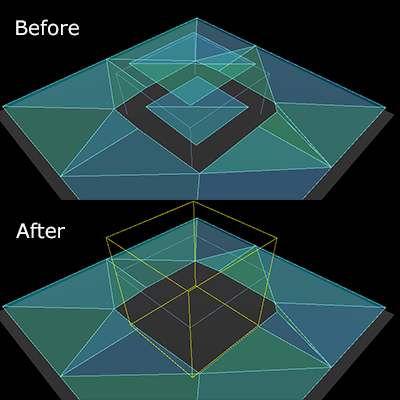
Một shape NavigationObstacle3D có thể được dùng để loại bỏ các phần navigation mesh không mong muốn.
Script template cho navigation mesh
Script sau dùng NavigationServer để parse hình học nguồn từ scene tree, bake một navigation mesh và cập nhật một navigation region với navigation mesh vừa cập nhật.
extends Node2D
var navigation_mesh: NavigationPolygon
var source_geometry : NavigationMeshSourceGeometryData2D
var callback_parsing : Callable
var callback_baking : Callable
var region_rid: RID
func _ready() -> void:
navigation_mesh = NavigationPolygon.new()
navigation_mesh.agent_radius = 10.0
source_geometry = NavigationMeshSourceGeometryData2D.new()
callback_parsing = on_parsing_done
callback_baking = on_baking_done
region_rid = NavigationServer2D.region_create()
# Enable the region and set it to the default navigation map.
NavigationServer2D.region_set_enabled(region_rid, true)
NavigationServer2D.region_set_map(region_rid, get_world_2d().get_navigation_map())
# Some mega-nodes like TileMap are often not ready on the first frame.
# Also the parsing needs to happen on the main-thread.
# So do a deferred call to avoid common parsing issues.
parse_source_geometry.call_deferred()
func parse_source_geometry() -> void:
source_geometry.clear()
var root_node: Node2D = self
# Parse the obstruction outlines from all child nodes of the root node by default.
NavigationServer2D.parse_source_geometry_data(
navigation_mesh,
source_geometry,
root_node,
callback_parsing
)
func on_parsing_done() -> void:
# If we did not parse a TileMap with navigation mesh cells we may now only
# have obstruction outlines so add at least one traversable outline
# so the obstructions outlines have something to "cut" into.
source_geometry.add_traversable_outline(PackedVector2Array([
Vector2(0.0, 0.0),
Vector2(500.0, 0.0),
Vector2(500.0, 500.0),
Vector2(0.0, 500.0)
]))
# Bake the navigation mesh on a thread with the source geometry data.
NavigationServer2D.bake_from_source_geometry_data_async(
navigation_mesh,
source_geometry,
callback_baking
)
func on_baking_done() -> void:
# Update the region with the updated navigation mesh.
NavigationServer2D.region_set_navigation_polygon(region_rid, navigation_mesh)
using Godot;
public partial class MyNode2D : Node2D
{
private NavigationPolygon _navigationMesh;
private NavigationMeshSourceGeometryData2D _sourceGeometry;
private Callable _callbackParsing;
private Callable _callbackBaking;
private Rid _regionRid;
public override void _Ready()
{
_navigationMesh = new NavigationPolygon();
_navigationMesh.AgentRadius = 10.0f;
_sourceGeometry = new NavigationMeshSourceGeometryData2D();
_callbackParsing = Callable.From(OnParsingDone);
_callbackBaking = Callable.From(OnBakingDone);
_regionRid = NavigationServer2D.RegionCreate();
// Enable the region and set it to the default navigation map.
NavigationServer2D.RegionSetEnabled(_regionRid, true);
NavigationServer2D.RegionSetMap(_regionRid, GetWorld2D().NavigationMap);
// Some mega-nodes like TileMap are often not ready on the first frame.
// Also the parsing needs to happen on the main-thread.
// So do a deferred call to avoid common parsing issues.
CallDeferred(MethodName.ParseSourceGeometry);
}
private void ParseSourceGeometry()
{
_sourceGeometry.Clear();
Node2D rootNode = this;
// Parse the obstruction outlines from all child nodes of the root node by default.
NavigationServer2D.ParseSourceGeometryData(
_navigationMesh,
_sourceGeometry,
rootNode,
_callbackParsing
);
}
private void OnParsingDone()
{
// If we did not parse a TileMap with navigation mesh cells we may now only
// have obstruction outlines so add at least one traversable outline
// so the obstructions outlines have something to "cut" into.
_sourceGeometry.AddTraversableOutline(
[
new Vector2(0.0f, 0.0f),
new Vector2(500.0f, 0.0f),
new Vector2(500.0f, 500.0f),
new Vector2(0.0f, 500.0f),
]);
// Bake the navigation mesh on a thread with the source geometry data.
NavigationServer2D.BakeFromSourceGeometryDataAsync(_navigationMesh, _sourceGeometry, _callbackBaking);
}
private void OnBakingDone()
{
// Update the region with the updated navigation mesh.
NavigationServer2D.RegionSetNavigationPolygon(_regionRid, _navigationMesh);
}
}
extends Node3D
var navigation_mesh: NavigationMesh
var source_geometry : NavigationMeshSourceGeometryData3D
var callback_parsing : Callable
var callback_baking : Callable
var region_rid: RID
func _ready() -> void:
navigation_mesh = NavigationMesh.new()
navigation_mesh.agent_radius = 0.5
source_geometry = NavigationMeshSourceGeometryData3D.new()
callback_parsing = on_parsing_done
callback_baking = on_baking_done
region_rid = NavigationServer3D.region_create()
# Enable the region and set it to the default navigation map.
NavigationServer3D.region_set_enabled(region_rid, true)
NavigationServer3D.region_set_map(region_rid, get_world_3d().get_navigation_map())
# Some mega-nodes like GridMap are often not ready on the first frame.
# Also the parsing needs to happen on the main-thread.
# So do a deferred call to avoid common parsing issues.
parse_source_geometry.call_deferred()
func parse_source_geometry() -> void:
source_geometry.clear()
var root_node: Node3D = self
# Parse the geometry from all mesh child nodes of the root node by default.
NavigationServer3D.parse_source_geometry_data(
navigation_mesh,
source_geometry,
root_node,
callback_parsing
)
func on_parsing_done() -> void:
# Bake the navigation mesh on a thread with the source geometry data.
NavigationServer3D.bake_from_source_geometry_data_async(
navigation_mesh,
source_geometry,
callback_baking
)
func on_baking_done() -> void:
# Update the region with the updated navigation mesh.
NavigationServer3D.region_set_navigation_mesh(region_rid, navigation_mesh)
using Godot;
public partial class MyNode3D : Node3D
{
private NavigationMesh _navigationMesh;
private NavigationMeshSourceGeometryData3D _sourceGeometry;
private Callable _callbackParsing;
private Callable _callbackBaking;
private Rid _regionRid;
public override void _Ready()
{
_navigationMesh = new NavigationMesh();
_navigationMesh.AgentRadius = 0.5f;
_sourceGeometry = new NavigationMeshSourceGeometryData3D();
_callbackParsing = Callable.From(OnParsingDone);
_callbackBaking = Callable.From(OnBakingDone);
_regionRid = NavigationServer3D.RegionCreate();
// Enable the region and set it to the default navigation map.
NavigationServer3D.RegionSetEnabled(_regionRid, true);
NavigationServer3D.RegionSetMap(_regionRid, GetWorld3D().NavigationMap);
// Some mega-nodes like GridMap are often not ready on the first frame.
// Also the parsing needs to happen on the main-thread.
// So do a deferred call to avoid common parsing issues.
CallDeferred(MethodName.ParseSourceGeometry);
}
private void ParseSourceGeometry ()
{
_sourceGeometry.Clear();
Node3D rootNode = this;
// Parse the geometry from all mesh child nodes of the root node by default.
NavigationServer3D.ParseSourceGeometryData(
_navigationMesh,
_sourceGeometry,
rootNode,
_callbackParsing
);
}
private void OnParsingDone()
{
// Bake the navigation mesh on a thread with the source geometry data.
NavigationServer3D.BakeFromSourceGeometryDataAsync(_navigationMesh, _sourceGeometry, _callbackBaking);
}
private void OnBakingDone()
{
// Update the region with the updated navigation mesh.
NavigationServer3D.RegionSetNavigationMesh(_regionRid, _navigationMesh);
}
}
Script sau dùng NavigationServer để cập nhật một navigation region với dữ liệu navigation mesh được tạo theo thủ tục.
extends Node2D
var navigation_mesh: NavigationPolygon
var region_rid: RID
func _ready() -> void:
navigation_mesh = NavigationPolygon.new()
region_rid = NavigationServer2D.region_create()
# Enable the region and set it to the default navigation map.
NavigationServer2D.region_set_enabled(region_rid, true)
NavigationServer2D.region_set_map(region_rid, get_world_2d().get_navigation_map())
# Add vertices for a convex polygon.
navigation_mesh.vertices = PackedVector2Array([
Vector2(0.0, 0.0),
Vector2(100.0, 0.0),
Vector2(100.0, 100.0),
Vector2(0.0, 100.0),
])
# Add indices for the polygon.
navigation_mesh.add_polygon(
PackedInt32Array([0, 1, 2, 3])
)
NavigationServer2D.region_set_navigation_polygon(region_rid, navigation_mesh)
using Godot;
public partial class MyNode2D : Node2D
{
private NavigationPolygon _navigationMesh;
private Rid _regionRid;
public override void _Ready()
{
_navigationMesh = new NavigationPolygon();
_regionRid = NavigationServer2D.RegionCreate();
// Enable the region and set it to the default navigation map.
NavigationServer2D.RegionSetEnabled(_regionRid, true);
NavigationServer2D.RegionSetMap(_regionRid, GetWorld2D().NavigationMap);
// Add vertices for a convex polygon.
_navigationMesh.Vertices =
[
new Vector2(0, 0),
new Vector2(100.0f, 0),
new Vector2(100.0f, 100.0f),
new Vector2(0, 100.0f),
];
// Add indices for the polygon.
_navigationMesh.AddPolygon([0, 1, 2, 3]);
NavigationServer2D.RegionSetNavigationPolygon(_regionRid, _navigationMesh);
}
}
extends Node3D
var navigation_mesh: NavigationMesh
var region_rid: RID
func _ready() -> void:
navigation_mesh = NavigationMesh.new()
region_rid = NavigationServer3D.region_create()
# Enable the region and set it to the default navigation map.
NavigationServer3D.region_set_enabled(region_rid, true)
NavigationServer3D.region_set_map(region_rid, get_world_3d().get_navigation_map())
# Add vertices for a convex polygon.
navigation_mesh.vertices = PackedVector3Array([
Vector3(-1.0, 0.0, 1.0),
Vector3(1.0, 0.0, 1.0),
Vector3(1.0, 0.0, -1.0),
Vector3(-1.0, 0.0, -1.0),
])
# Add indices for the polygon.
navigation_mesh.add_polygon(
PackedInt32Array([0, 1, 2, 3])
)
NavigationServer3D.region_set_navigation_mesh(region_rid, navigation_mesh)
using Godot;
public partial class MyNode3D : Node3D
{
private NavigationMesh _navigationMesh;
private Rid _regionRid;
public override void _Ready()
{
_navigationMesh = new NavigationMesh();
_regionRid = NavigationServer3D.RegionCreate();
// Enable the region and set it to the default navigation map.
NavigationServer3D.RegionSetEnabled(_regionRid, true);
NavigationServer3D.RegionSetMap(_regionRid, GetWorld3D().NavigationMap);
// Add vertices for a convex polygon.
_navigationMesh.Vertices =
[
new Vector3(-1.0f, 0.0f, 1.0f),
new Vector3(1.0f, 0.0f, 1.0f),
new Vector3(1.0f, 0.0f, -1.0f),
new Vector3(-1.0f, 0.0f, -1.0f),
];
// Add indices for the polygon.
_navigationMesh.AddPolygon([0, 1, 2, 3]);
NavigationServer3D.RegionSetNavigationMesh(_regionRid, _navigationMesh);
}
}